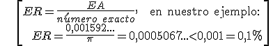

Números reales
Aproximaciones y errores
Usamos habitualmente números aproximados porque no es necesario o conveniente dar la cantidad exacta o no la podemos calcular con precisión.
Por ejemplo, si sabemos que alguien ha ganado 303.215 € en la lotería, decimos que ha ganado unos 300.000 €; cuando medimos una mesa con un metro, podemos decir la medida en centímetros o milímetros, pero no la podemos decir con más precisión.
Una estimación de un número real es otro número real próximo al dado. Una aproximación de orden n de un número es una estimación de dicho número en la que se prescinde de las cifras de órdenes de unidad inferiores a n. Puede ser:
– Por defecto, si todas las cifras de la estimación son exactas (es menor que el número)
– Por exceso, si son exactas todas las cifras excepto la que indica el orden, que es una unidad mayor (es mayor que el número)
Ejemplo: 3,14 es la aproximación por defecto de π a las centésimas y 3,15 lo es por exceso.
El redondeo de orden n de un número es la aproximación de orden n más próxima al número. Para ello se observa la primera cifra que se quita en la aproximación y:
– si es menor que cinco, se deja como está
– si es mayor o igual que cinco, se aumenta una unidad la cifra de orden n.
Ejemplo: 3,14 es el redondeo de π a las centésimas.
Cuando hablamos de números aproximados estamos cometiendo un error, la resta entre el número exacto y el aproximado. Esta diferencia se llama error absoluto.
Por ejemplo, si usamos 3,14 para aproximar π, entonces: EA = |π – 3,14| = 0,001592…<0,01
En este ejemplo, no sabemos el error exacto pero podemos controlarlo o acotarlo, decimos que es menor que una centésima.
Para comparar errores, usamos el error relativo:

Ejercicios:
1.- Aproxima por defecto y exceso y redondea a las centésimas:
a) 1/3
b) √2
c) e
2.- Calcula los errores cometidos cuando aproximamos
a) 1/3 por 0,3
b) e por 2,7
Soluciones:
1.-
2.-
| número | defecto | exceso | redondeo |
| 1/3 | 0,33 | 0,34 | 0,33 |
| √2 | 1,41 | 1,42 | 1,41 |
| e | 2,71 | 2,72 | 2,72 |
a) EA= 1/30 ER= 1/10=10%
b) EA= 0,01828...<0,1 ER=0,006725...<0,01=1%
Obra publicada con Licencia Creative Commons Reconocimiento No comercial Compartir igual 4.0